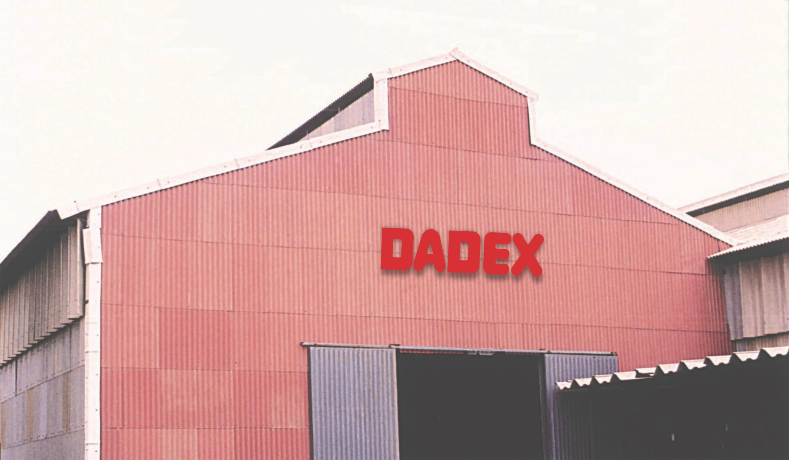
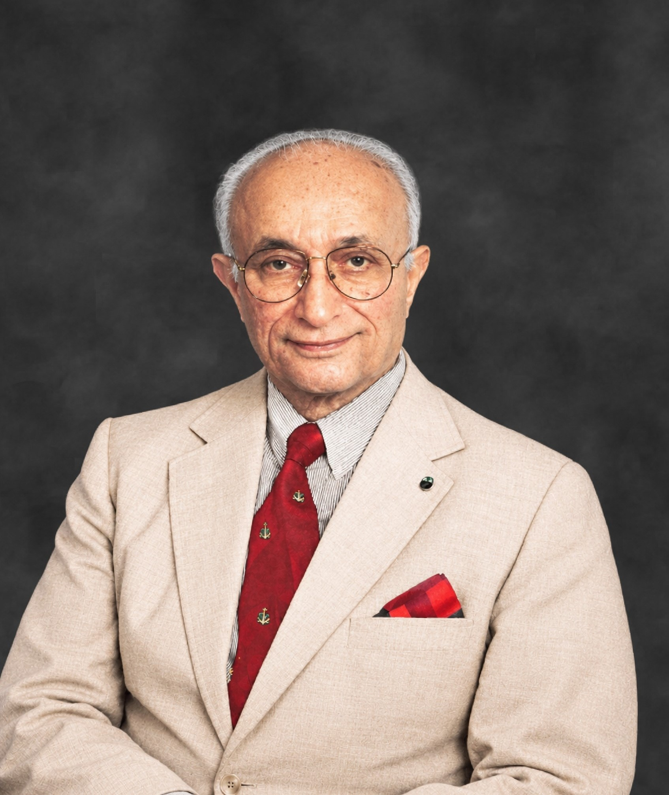
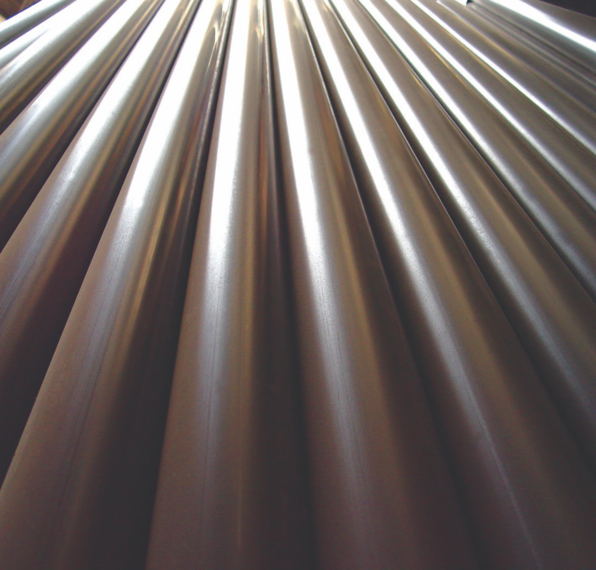
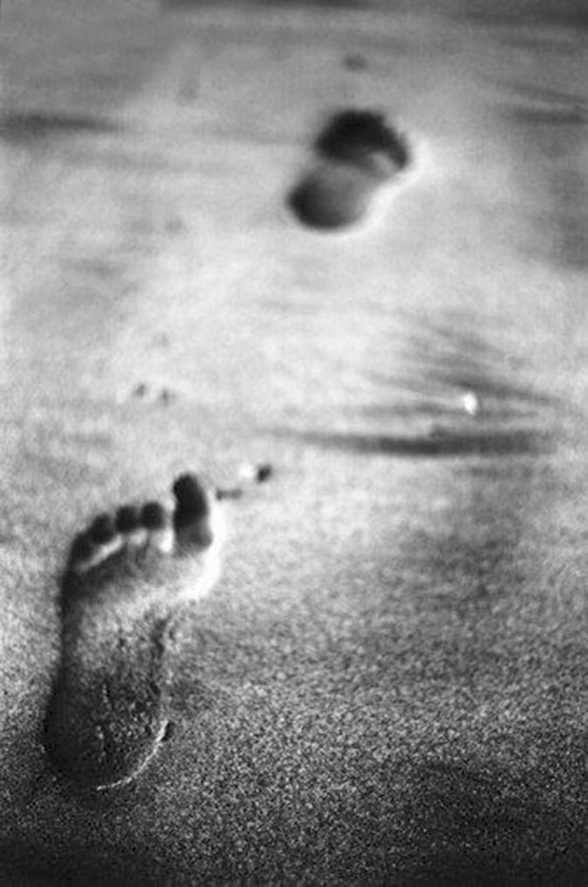
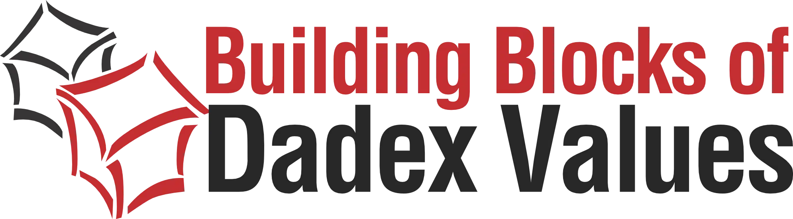
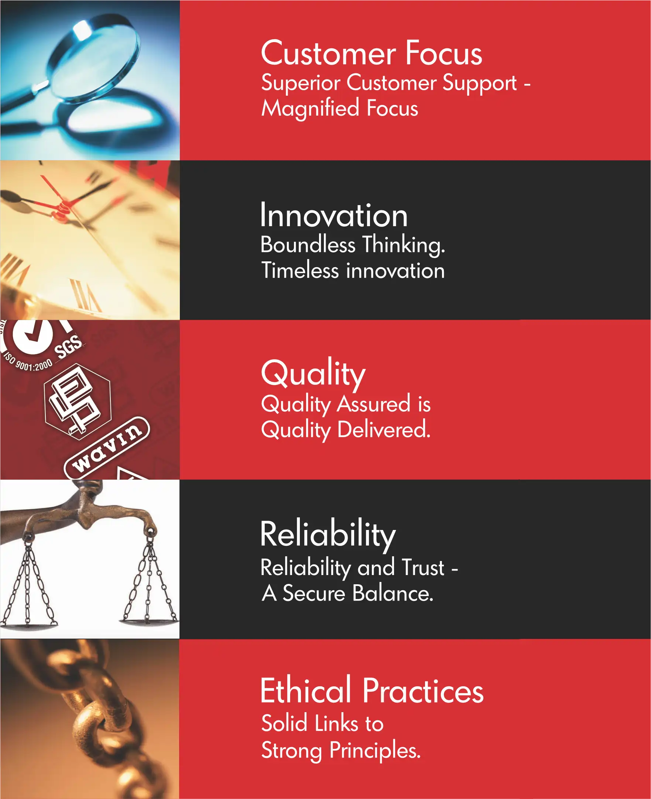

SSGC has been procuring MDPE pipes of various diameters from Dadex for the last several years. Quality and reliability have been two leading traits that Dadex always deliver through its products and services. Their in-depth product knowledge and determination to see a task is completed has helped us in setting up a dependable gas distribution network. We hope that they will continue to provide innovative solutions to their customers.
Since 1959
The Dadex Story
A journey of trust, innovation and engineering experience. Since 1959, Dadex has evolved from a pioneering manufacturer into a diversified provider of piping, drainage and utility solutions.
Who We Are
Over six decades of
engineering experience.
Dadex Eternit Limited was incorporated as a public limited company in 1959 and is listed on the Pakistan Stock Exchange. The company manufactures and sells construction materials, principally piping systems and allied products, and also undertakes the merchandising of imported pipe fittings, accessories and other building products.
A pioneer of thermoplastic piping systems in Pakistan, Dadex has expanded from its early fibre cement roots into a broad portfolio serving construction, housing, architecture, telecommunications and infrastructure applications.

At a Glance
A company built around
essential infrastructure.
Dadex combines manufacturing experience, technical capability and market reach to support public, industrial, commercial and private-sector requirements.
1959
Established
Decades of engineering and manufacturing experience.
PSX
Listed Company
Public limited company listed on the Pakistan Stock Exchange under DADX.
02
Factories
Manufacturing facilities in Hyderabad and Sundar Industrial Estate, Lahore.
05
Sales Offices
Karachi, Lahore, Multan, Faisalabad and Islamabad.
05
Core Materials
UPVC, PP-R, PP-RCT, PE and PP thermoplastic systems.
04
Certifications
ISO 9001, ISO 14001, ISO 45001 and applicable PSQCA certifications.

Founder Chairman
Kassim Dada
(1919 – 2001)
A legacy of integrity, fairness and the sanctity of promise.
Kassim Dada, the Founder Chairman of Dadex, was a man of principles — an astute businessman, a philanthropist, an avid traveller and a man committed to basic values. His individuality influenced many to add meaning and significance to their own lives.
Following the simple principle of fairness, clarity and sincere application to all things in life, he worked to build a company recognised not only for the quality of its work and products, but also for its integrity.
Discover Our HeritageThe Vision
Our Vision
The destination Dadex is built to reach — for every stakeholder we serve.
“…to be the most valued company for all stakeholders, renowned for customer focus, innovation, quality, reliability & ethical practices.”

The Mission
Our Mission
Our mission translates the Dadex vision into priorities for customers, quality, people and shareholder value.
- Provide unparalleled service and best value through a responsive and cost-effective supply chain.
- Increase penetration in piping systems through new channels and market opportunities.
- Provide quality products through international standards and best practices.
- Set new trends through innovative marketing and manufacturing.
- Follow business ethics, comply with SH&E standards and contribute responsibly to society.
- Develop talent in a competitive environment where people can excel and grow.
- Strive to maximise shareholder value through sustained profitable growth.


Values that shape
HOW WE WORK
Customer focus, innovation, quality, reliability and ethical practices form the foundation of the Dadex approach.

Product Partners
Global collaboration,
local manufacturing.
Dadex works with established international partners to bring proven technologies and standards to the Pakistani market.
Wavin
, NetherlandsTechnical collaboration for thermoplastic piping systems in Pakistan.
Effast
, ItalyCollaboration for UPVC pressure piping systems.
Magnaplast
, PolandCollaboration supporting Dadex's specialised piping portfolio.
Quality & Compliance
Standards
we stand behind.
Dadex is committed to quality, reliability and ethical practices, supported by recognised management systems and applicable product standards.
Quality & Compliance
ISO
9001
Quality Management
ISO
14001
Environmental Management
ISO
45001
Occupational Health & Safety
PSQCA
Certified
Applicable Product Standards
Customer Experiences
Why Dadex?
Dadex has built lasting relationships with customers through a commitment to product quality, reliability, technical support and dependable service. Here is what some of our customers have to say about their experience with Dadex.
Quality and reliability have been two leading traits that Dadex always delivers through its products and services. Their in-depth knowledge and determination to see a task till its completion, has helped us in setting up one of the country's sophisticated and dependable gas distribution network.
EVTL had been facing a severe corrosion problem of the sprinkler piping installed at two VCM spheres. Due to severe internal corrosion in the previously installed carbon steel pipes the sprinkler water carried rust particles in it. This resulted in severe scaling on the surface of the spheres. Dadex helped EVTL's objective of resolving the issue by assessing the problem and recommending a proper system. Now as the system has been successfully commissioned and operated for few months, we appreciate the efforts made and interest taken by the Dadex team in completing a successful project with EVTL.
M/S. Dadex were very prompt in deliveries of uPVC cable ducts and, we shall always give them first preference for future supplies. We are absolutely delighted with the Service of Dadex people.
We value the trust of our customers and welcome your feedback.
Share Your Experience